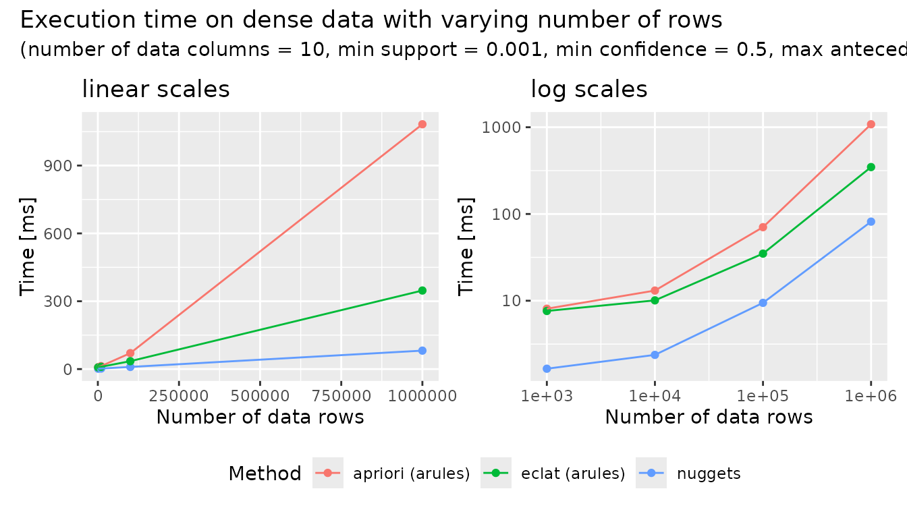
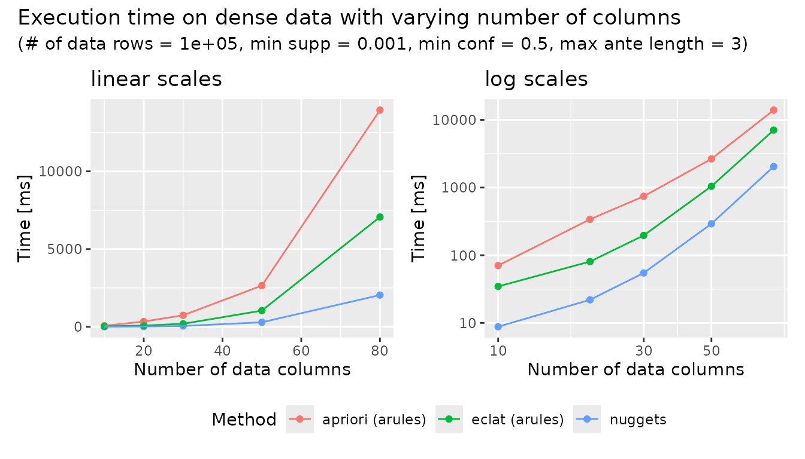

Comparison of nuggets and arules performance
Source:vignettes/comparison-with-arules.Rmd
comparison-with-arules.RmdIntroduction
This vignette compares the performance of the following R packages:
-
nuggets2.2.3 -
arules1.7.14
The task of interest is the discovery of association rules in Boolean (TRUE/FALSE) datasets. The goal is to provide a comparison of brute computational power rather than a full comparison of package functionality, so advanced features, filtering options, and other factors that may affect practical performance are not considered here.
For reproducibility, the benchmark script used in this vignette is available in the package repository on GitHub.
Materials and Methods
A series of experiments were conducted to evaluate the performance of
the nuggets and arules packages. For
arules, two different algorithms were evaluated: the
Apriori algorithm (apriori()) and and the Eclat algorithm
(eclat()). For nuggets, the
dig_associations() function was used to discover
association rules. The experiments were designed to measure the
execution time of each method under different conditions, including
varying the number of rows and columns in the datasets, as well as the
sparsity of the data.
The test datasets were randomly generated with binary values (TRUE/FALSE) and varying numbers of rows and columns. The sparsity of the data was controlled by adjusting the probability of TRUE values in the dataset.
Specifically, the following parameters were varied in the experiments:
- number of rows: 103, 104, 105, 106
- number of columns: 10, 20, 30, 50, 80
- the probability of TRUE values: 0.5 (dense datasets) and 0.1 (sparse datasets)
The other parameters were kept constant across all experiments:
- the minimum support threshold: 0.001
- the minimum confidence threshold: 0.5 (dense datasets) and 0.1 (sparse datasets)
- the maximum length of antecedents: 3
Each experiment was repeated 5 times to ensure the reliability of the results, and the average execution time was recorded. All experiments were conducted on AMD Ryzen 9 5900X 12-Core Processor (512 KB cache) with 62.7 GB of RAM available under the GNU/Linux operating system. The CPU frequency governor was set to “performance” mode and the running process was pinned to a single CPU core.
The results are visualized using both linear and logarithmic scales to provide insights into the performance characteristics of each method.
Results
Dense data: varying number of rows
| rows | cols | nuggets | eclat (arules) | apriori (arules) |
|---|---|---|---|---|
| 1e+03 | 30 | 17 | 47 | 58 |
| 1e+04 | 30 | 20 | 58 | 105 |
| 1e+05 | 30 | 55 | 252 | 799 |
| 1e+06 | 30 | 478 | 1958 | 9102 |
| 1e+07 | 30 | 6043 | 16875 | 107752 |

Dense data: varying number of columns
| rows | cols | nuggets | eclat (arules) | apriori (arules) |
|---|---|---|---|---|
| 1e+05 | 10 | 9 | 35 | 70 |
| 1e+05 | 20 | 22 | 81 | 339 |
| 1e+05 | 30 | 55 | 196 | 742 |
| 1e+05 | 50 | 292 | 1044 | 2651 |
| 1e+05 | 80 | 2042 | 7062 | 13937 |

Discussion
Similarly as arules:eclat(), nuggets is
based on the ECLAT algorithm. Therefore, both variants are expected to
perform similarly well. A likely explanation for the strong performance
of nuggets on dense data is its highly optimized
implementation of conjunction computation and support counting. These
operations are central to rule discovery, and in nuggets
they are accelerated using:
- SIMD instructions via the XSIMD library
- highly optimized bit population count via the libpopcnt library
This makes the evaluation of candidate conjunctions fast particularly for dense datasets.
Note that all nuggets optimizations are available with
the default compiler directives recommended by CRAN, without requiring
any non-standard package installation settings.
Summary
The results show that nuggets is particularly effective
for dense data, where its optimized implementation provides consistently
strong performance. For sparse data with many predicates, however,
arules, especially apriori(), becomes more
advantageous.
For additional information on the nuggets package,
see:
-
vignette("nuggets")for an overview of the package and its main workflows, -
vignette("association-rules")for a specialized pattern family based on thedig_associations()function, -
vignette("conditional-correlations")for subgroup-based correlation analysis on numeric variables, -
vignette("contrast-patterns")for subgroup-based statistical comparisons of numeric variables, -
vignette("custom-patterns")for defining custom pattern types.